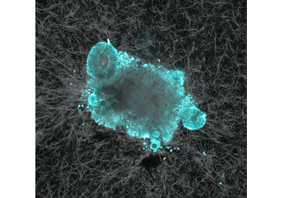

Examples¶
These examples provide data sets to test saenopy and see its various applications.
Classic TFM (liver fibroblasts)
Classic TFM (liver fibroblasts)
Dynamic TFM (immune cells)
Microbeads to Detect Matrix Deformations
Microbeads to Detect Matrix Deformations

Multicellular TFM (intestinal organoids)
Multicellular TFM (intestinal organoids)
Brightfield TFM & Cropped Input
Brightfield TFM & Cropped Input